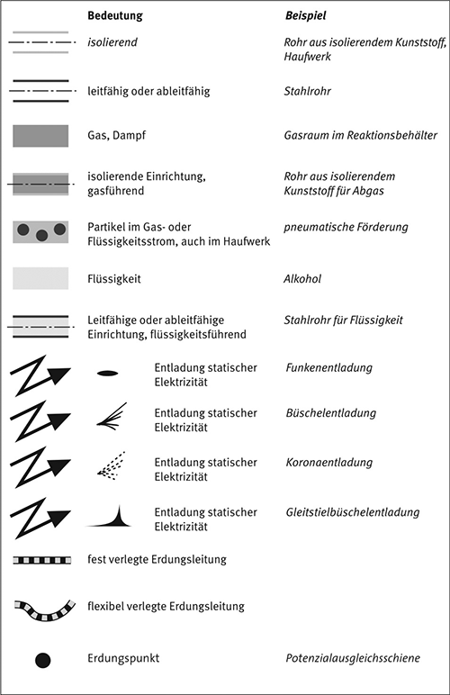

Verzeichnis der Beispiele
| 1 | Beschichten und Bedrucken isolierender Folien |
| 2 | Befüllen mittelgroßer Behälter |
| 3 | Befüllen und Entleeren von Rigid Intermediate Bulk Containern (RIBC) in Zone 1 |
| 4 | Befüllen von Fässern in Zone 1 |
| 5 | Befüllen kleiner Kunststoffkanister in Zone 1 |
| 6 | Schläuche zum Transport von Flüssigkeiten mit niedriger Leitfähigkeit durch Zone 1, die verursacht ist durch Gefahrstoffe der Explosionsgruppen IIA und IIB |
| 7 | Abluftsysteme in Bereichen der Zone 1 |
| 8 | Funkenentladungen an einem isolierten Metalltrichter |
| 9 | Befüllen isolierender Kunststoffsäcke mit Schüttgut in Zone 21 oder 22 |
| 10 | Pneumatische Förderung brennbarer Schüttgüter |
| 11 | Schläuche zum pneumatischen Transport nicht brennbarer Schüttgüter durch Zone 1, die verursacht ist durch Gefahrstoffe der Explosionsgruppen IIA und IIB |
| 12 | Schläuche zum pneumatischen Transport brennbarer Schüttgüter |
| 13 | Erdung in Zone 1 |
| 14 | Funkenentladungen |
| 15 | Büschelentladungen und Koronaentladungen |
| 16 | Gleitstielbüschelentladungen |
| 17 | Schüttkegelentladungen |
Symbollegende

Formelzeichen und Einheiten
| Formelzeichen | Bezeichnung | Einheit |
| t | Zeit, Verweilzeit | s |
| RE | Ableitwiderstand | Ω |
| RD | Durchgangswiderstand | Ω |
| d | Durchmesser | mm |
| UD | Durchschlagspannung | V |
| εo | Elektrische Feldkonstante(8,854 · 10-12) | As/Vm |
| A | Fläche | m², cm² |
| VF | Flüssigkeitsdurchsatz | l/s |
| N | Geometriefaktor | – |
| v | Geschwindigkeit | m/s |
| C | Kapazität | F |
| ρ | Ladungsdichte | C/m3 |
| L | Länge | m, mm |
| κ | Leitfähigkeit | S/m |
| W | maximale umgesetzte Energie | J |
| WSKE | maximale zu erwartende Äquivalentenergie einer Schüttkegelentladung | mJ |
| WGBE | maximale zu erwartende Energie einer Gleitstielbüschelentladung | J |
| Q | Menge der Ladung auf einem Leiter | C |
| MZE | Mindestzündenergie | mJ |
| MZQ | Mindestzündladung | nC |
| σ | Oberflächenladungsdichte | C/m² |
| RO | Oberflächenwiderstand | Ω |
| εr | Relative Permittivitätszahl (früher Dielektrizitätszahl) | – |
| τ | Relaxationszeit | s |
| D | Schichtdicke | mm, μm |
| dm/dt | Massenstrom | kg/s |
| R | spezifischer Oberflächenwiderstand | Ω |
| ρ | spezifischer Widerstand, spezifischer Durchgangswiderstand | Ωm |
| RST | Streifenwiderstand | Ω |
| I | Stromstärke | A |
| T | Temperatur | °C |
| V | Volumen | m3, Liter |
| s | Wandstärke | mm |
| R | Widerstand | Ω |